Kali下安装Shadowsocks与利用SS和ProxyChains实现任意应用代理

在安装了kali后在网上搜过很多次“跨栏”的姿势，但是搜到的答案要么很麻烦，要么介绍的不够详细易懂，所以就萌生了一个自己去整理一下，总结出一个简单易用教程的想法，仅提供给刚刚使用KaliLinux的萌新们做一个参考，而不必去费时费力的搜索大量的资料。
//大前提是你要有一个可用的ss…….
安装Shadowsocks的图形化界面//类似Win下的纸飞机
直接在 /etc/apt/sources.list 里添加源
在/etc/apt/sources.list 最后加上
deb http://ppa.launchpad.net/hzwhuang/ss-qt5/ubuntu devel main添加完源后很有可能会报错，
W: GPG 错误：http://ppa.launchpad.net vivid InRelease: 由于没有公钥，无法验证下列签名： NO_PUBKEY 2E30EE6263DE9CD4
解决方法如下：
sudo apt-key adv --recv-keys --keyserver keyserver.Ubuntu.com 64AC9D23
【忘记截图了，出现这个问题，可以留言，我告诉你怎么弄】
（后面的八位数字就是提示无法验证下列签名后的后八位数字，好比我的就是64AC9D23）
然后就解决了,然后下一步就可以。
然后
apt-get update&&apt-get install shadowsocks-qt5这时候图形界面的SS管理器就安装好了
在应用程序里打开：
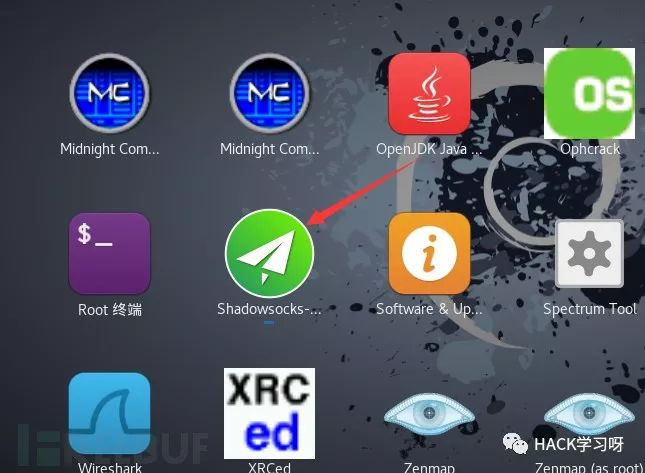

点击“连接”——》“添加”——》“手动”
如下界面
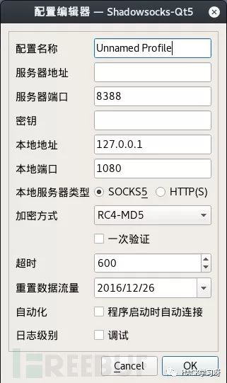
注意：不知道什么原因，在这里选择导入json配置文件程序会崩溃，所以尽量手动输入
配置完成后点击五角星，如果正常的话会出现延迟XX毫秒
不正常的话要去检查一下输入的ss账号信息是否有误
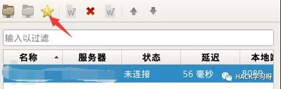
安装命令行界面的Shadowsocks
1. apt-get install python-pipsudo pip install shadowsocks
然后创建配置文件
终端输入：
gedit /etc/shadowsocks.json加入下面的配置内容，并补全配置信息
{ "server":"服务器地址", "server_port":服务器端口号, "local_address": "127.0.0.1", "local_port":1080, "password":"密码", "timeout":300, "method":"加密方式", "fast_open": true, "workers": 1}如图：
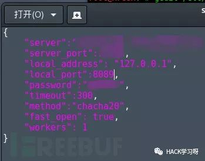
终端启动客户端
sslocal -c /etc/shadowsocks.json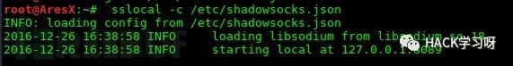
配置proxychain（会在下文介绍）kali默认已经安装了。
vi /etc/proxychains.conf
将socks4 127.0.0.1 9095改为socks5 127.0.0.1 xxxx //xxxx改为你自己的端口
设置 ProxyChains
1.打开ProxyChains配置文件
vi /etc/proxychains.conf#顺便补充一下Vim编辑器简单使用方法
执行上面命令之后摁一下键盘的i键，就可以对文本进行修改
修改完成后摁esc 然后摁住shift+； 左下角会出现一个冒号
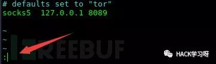
输入wq摁下回车保存并退出
2.去掉dynamic_chain前面的注释符
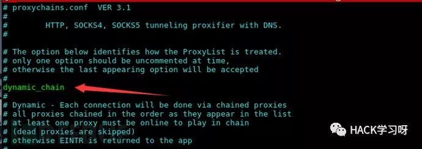
3.添加代理服务器列表
在最下方这个地方，默认是socks4 xxxx xxx
改成sock5 127.0.0.1 xxxx // xxxx是你自己的端口，也就是上边在配置ss时输入的local_port:xxxx
我这里用的是8089
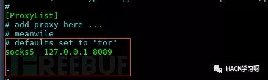
4. 测试代理服务是否正常
执行
proxyresolv www.target.com此时执行会出现命令未找到
终端输入
cp /usr/lib/proxychains3/proxyresolv /usr/bin/然后再次执行
proxyresolv www.google.com//这时候ss的命令界面应该是正在运行的，就是在执行过sslocal -c /etc/shadowsocks.json之后
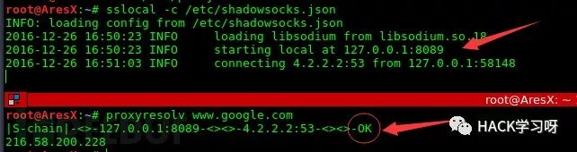
返回ok，说明配置正确，可以愉快的跨栏了。
5.使用ProxyChains 启动firefox
终端输入：proxychains firefox启动火狐浏览器
测试一下：
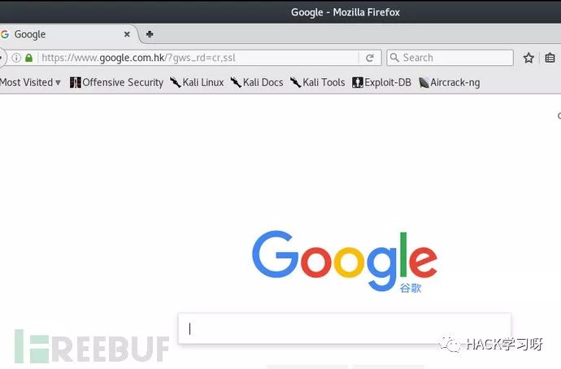
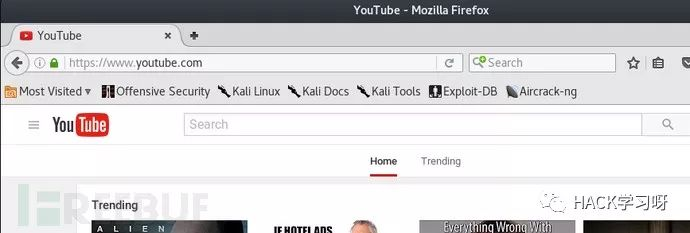
使用ProxyChains代理其他程序和启动Firefox同理
proxychains msfconsole //启动msf
proxychains sqlmap //通过代理启动sqlmap
不再一一介绍。
文章来自Freebuf，由HACK学习整理发出，如有侵权，请联系删除
The End
推荐一个Kali的教程
安全牛【edu.aqniu.com】
课程地址：https://edu.aqniu.com/course/1020
【阅读原文，即可传送】
这是一个免费的课程，值得初学者一看